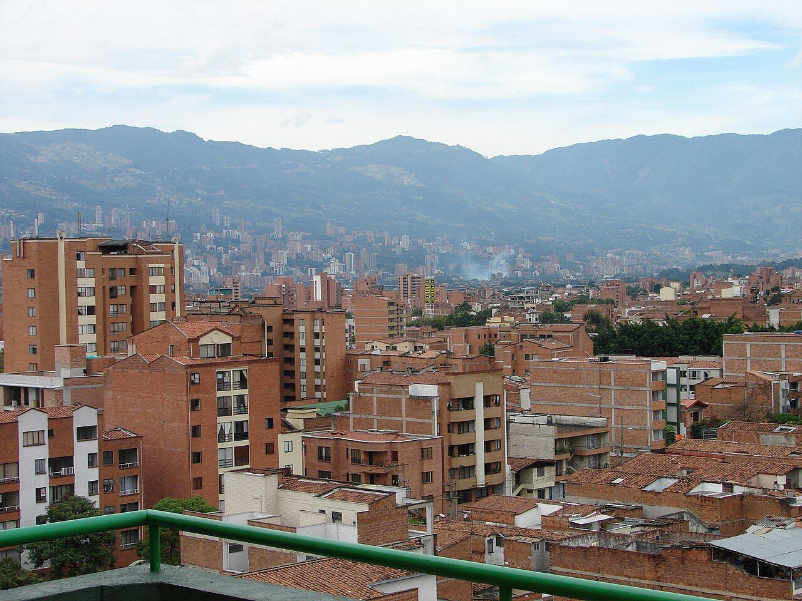

Alpus lleva más de cuatro décadas siendo parte de Medellín: de sus noches, sus canciones, sus amigos y sus historias.
Reservas y domicilios — WhatsApp Ver la cartaUn clásico de San Cristóbal que se renovó en 2025 sin perder lo esencial.
Nuestra bebida insignia: “Nació con Alpus y sigue siendo parte de nuestra identidad”. Una bebida heredada que sigue contando nuestra historia.
Noches de rock, baladas y pop en español, y son cubano — con artistas invitados en vivo.
Coman rico y a domicilio pidiendo en Alpus: escribe al WhatsApp, pide la carta, elige tu plato favorito y te lo llevamos a casa.
“En Alpus el rock nos inspira, por eso nuestros platos llevan nombres que han marcado generaciones.” Pide la carta completa, con precios, por WhatsApp.
Platos y bebidas tomados de las publicaciones de Alpus en Instagram. La carta completa, con precios, se pide por WhatsApp.
Reseñas reales de clientes, tal como las publicaron.
“Muy excelente para un rato diferente, y la música ni q hablar”
“Desde los 80s, un lugar muy agradable para mí”
“Es un ambiente para ir en pareja o con amigos, buena música y precios”
“Si de tradición hablamos cuantas historias por contar en este lugar una cerveza, una pizza o sus papas que son deliciosas”
“Excelente servicio”
Calificación y reseñas de Google recopiladas por carta.menu (consultado el 15 de noviembre de 2026).
Noches de música en Alpus — y San Cristóbal, nuestro corregimiento en Medellín.



Almuerzos los fines de semana desde las 12:00 del mediodía · Te esperamos todos los días desde las 6:00 p. m.
Calle 62 # 129-32, San Cristóbal, Medellín, Antioquia. Reserva tu momento especial y celebra diferente.
Correo: alpusrestaurantebar1983@gmail.com